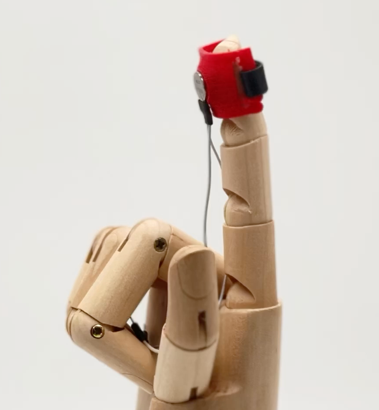
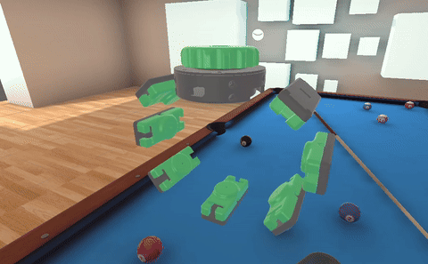

Hardware
Obi Robotics Hand-Tracking Glove
A modular glove that tracks each finger at high rate with haptics for precise XR and robotics control.
Hardware, software and studies that turn sensorimotor science into instruments people can touch.
A modular glove that tracks each finger at high rate with haptics for precise XR and robotics control.

Renders physical button-press sensations with controllable indentation.

Delivers low- and high-frequency vibration to simulate texture and touch in XR.

A grounded lab system delivering precise vibrotactile stimuli while measuring fingertip force.

A VR pool simulation coupled to a wrist squeeze band for impact-synchronised feedback.

Delivers brief squeezes to convey impacts and events in virtual environments.

A no-code physics sandbox for natural hand-object interaction, grasping and manipulation.

A simulation pipeline that generates realistic robot grasps, linking game engines and robots in real time.